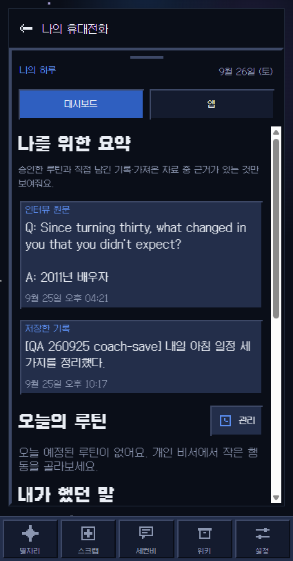
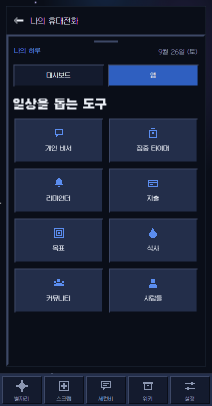
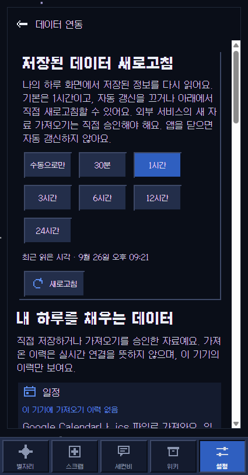
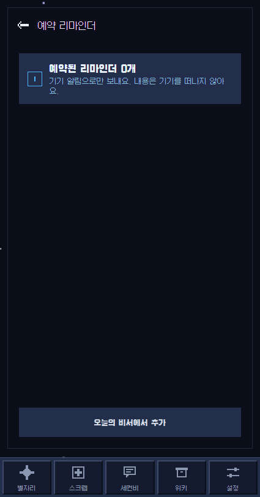

2ndB · QA 계정 기준 · 2026-09-26 KST
대시보드 화면 검증과 설계 근거
이 보고서는 사용자가 로그인한 QA 브라우저의 localhost:8081을 대상으로 합니다. 서버는 codex/observatory-dashboard-260925 작업트리를 제공하며, 이 보고서가 저장된 Simon-YHKim/TTL-Work_rev2 작업트리와 다릅니다. 화면은 425×812 뷰포트에서 확인했습니다.
사용자가 전용 브라우저에 로그인한 뒤 대시보드·앱·데이터 연동·리마인더와 기록 상세를 실제로 열었습니다.
QA 인터뷰와 저장 기록이 표시되고, 1시간 기본 주기·30분 변경·복원·수동 새로고침을 확인했습니다.
다크 화면의 밝은 스크롤바, 화면 전환 접근성 경고, 반복되는 웹 매니페스트 404를 발견했습니다.
실제 브라우저 검증
| 검증 항목 | QA 화면에서 관찰한 결과 | 판정 |
|---|---|---|
| 대시보드 | QA 시나리오의 인터뷰 원문·저장 기록, 예정 루틴 없음, 생활 영역별 기록 수를 표시. 없는 일정이나 점수를 만들지 않음. | 통과 |
| 앱 탭 | 개인 비서, 집중 타이머, 리마인더, 지출, 목표, 식사, 커뮤니티, 사람들 도구 8개를 표시. | 통과 |
| 데이터 연동 | 설정 → 연동 관리로 이동. 기본 1시간 선택, 30분 선택 후 1시간으로 복원. 수동 새로고침 뒤 최근 읽은 시각이 21:21에서 21:22로 변경됨. | 통과 |
| 출처 상태 | Google Calendar·GPS 등은 가져오기 이력 없음, Garmin은 건강 앱 경유·직접 연결 아님, SNS·메신저 일부는 직접 기록만 가능하다고 표시. | 통과 |
| 휴대전화 알림 | 설정 → 휴대전화 알림에서 예약 리마인더 화면으로 이동. QA 계정에는 예약 0개 표시. | 통과 |
| 근거로 이동 | 요약의 ‘인터뷰 원문 열기’를 누르면 해당 기록 상세 화면으로 이동. | 통과 |
화면 캡처




발견한 문제
| 우선순위 | 현상과 재현 | 영향 |
|---|---|---|
| P2 · 접근성 | 설정의 ‘연동 관리’ 또는 ‘휴대전화 알림’으로 이동하면 콘솔에 Blocked aria-hidden ... descendant retained focus 경고가 재현됩니다. | 숨겨진 배경에 키보드 초점이 남아 보조기기 사용 시 문맥이 어긋날 수 있습니다. |
| P2 · 웹 리소스 | 전체 경로 새로고침 때 /2nd-B/manifest.webmanifest가 404이고 콘솔 오류가 반복됩니다. | 웹 설치/PWA 메타데이터를 정상적으로 읽지 못합니다. 대시보드 자료 로딩 실패는 관찰되지 않았습니다. |
| P3 · 시각 일관성 | 대시보드와 데이터 연동의 스크롤 가능한 부분에 OS 기본의 밝은 스크롤바가 다크 UI 위로 나타납니다. | 픽셀 스타일 화면에서 대비가 과도합니다. 콘텐츠 읽기와 조작은 가능합니다. |
왜 이 구조인가
| 결정 | 근거 | 현재 구현의 경계 |
|---|---|---|
| Simon 전용 수치 대신 계정 자료 | 사용자가 준 Claude 프롬프트의 Calendar 이벤트 ID·Linear 이슈·Gmail·CI 집계는 한 사람의 작업 데이터입니다. 2ndB는 각 사용자의 기록에서 개인 비서 경험을 제공해야 합니다. | QA 계정의 승인된 루틴·인터뷰·기록, 동의된 건강 자료, 기기 내 가져오기 이력만 후보가 됩니다. 해당 소스가 없으면 수치를 지어내지 않습니다. |
| JSON 선택 규칙 | 화면 구성을 일정하게 유지하면서 계정 자료에 따라 내용을 바꾸라는 요청을 반영했습니다. | dashboard-rules.json이 요약 2칸, 출처별 가중치, 7일 전망, 건강 자료의 최신성 한계를 고정합니다. 현재는 AI가 레이아웃을 새로 생성하지 않습니다. |
| 자료 출처 구분 | 제공된 프롬프트의 “실데이터·프록시·샘플 구분” 원칙과 앱의 기록→위키→요약 방향을 따릅니다. | 가져오기 이력은 지속 연결이 아니고, 7일 전망은 Google Calendar 일정이 아니라 사용자가 승인한 반복 루틴입니다. |
| 갱신을 설정으로 | 사용자가 데이터 풀링과 알림을 앱 안 앱이 아닌 설정에서 관리하길 요청했습니다. | 기본 1시간, 수동 전용과 다른 주기를 고를 수 있습니다. 앱 활성 중 저장 자료를 다시 읽을 뿐, 외부 서비스의 백그라운드 동기화는 아닙니다. |
| 개인정보 보호 | 실제 사용자 경험에서 없는 연결을 연결됐다고 표시하거나, 동의 없이 건강·메시지 자료를 모으면 안 됩니다. | 건강 자료는 성인 확인과 명시적 동의가 있어야 읽고, Garmin은 OS 건강 앱을 통한 경로로만 안내합니다. 직접 Garmin·SNS·메신저 연동은 아직 없습니다. |
요청 프롬프트와 다른 부분
현재 구현은 재사용 가능한 제품 화면으로 변환한 첫 단계입니다. Simon 개인 대시보드의 3장 요약 카드, Gmail·Linear·GitHub 수치, 07:00/21:00 예약 HTML 생성, 한국어·영어와 쉬움·전문가 4중 설명은 그대로 이식하지 않았습니다. 대신 앱에 실제로 존재하는 자료만 사용합니다. 따라서 “모든 연결 서비스의 데이터를 자동 수집해 완성된 개인 운영 화면을 만든다”는 최종 목표까지 구현됐다고 볼 수 없습니다.
검증 범위와 설치 상태
Windows에서 전용 브라우저 설치 스크립트는 WSL/Bun 경로 문제로 완료되지 않았으나, 기존 browse.exe를 정상 실행해 사용자의 QA 로그인 세션에서 모든 위 화면을 검증했습니다. 이메일 주소 자체는 화면에 표시되지 않아 UI만으로 재확인하지 않았고, QA 계정 여부는 사용자의 로그인 완료 확인과 보이는 QA 시나리오 자료를 근거로 했습니다.
콘솔의 반복 404와 초점 경고 외에 대시보드 데이터 로딩을 멈추는 예외는 관찰되지 않았습니다. 장시간 실제 타이머(1시간), 백그라운드 동기화, 외부 서비스 OAuth, 실제 기기 푸시는 시험하지 않았습니다. 브라우저는 외부 데이터를 자동 수집하지 않는다고 화면에 명시합니다.
이전 구현 회차의 npm run verify -- --runInBand는 Jest 800개 묶음·10,086개 테스트 통과로 보고됐습니다. 이 QA 회차에는 재실행하지 않았으므로 현재 작업트리 전체가 다시 통과했다고 주장하지 않습니다.
근거 문서
PRD · DESIGN · CONCEPT. 구현 기준은 서버 작업트리의 src/lib/dashboard/dashboard-rules.json, README.md, summary.ts, load.ts, refresh-cadence.ts입니다.